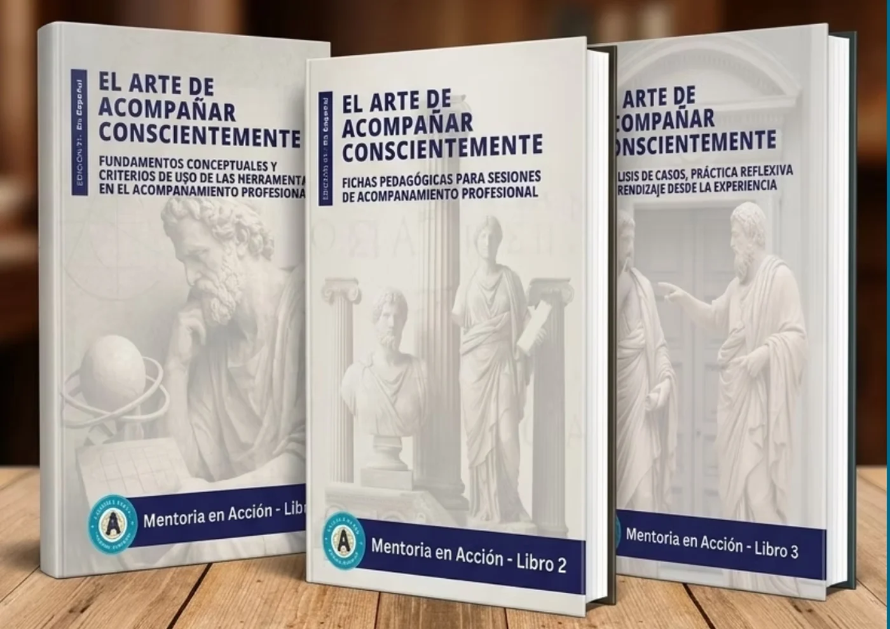
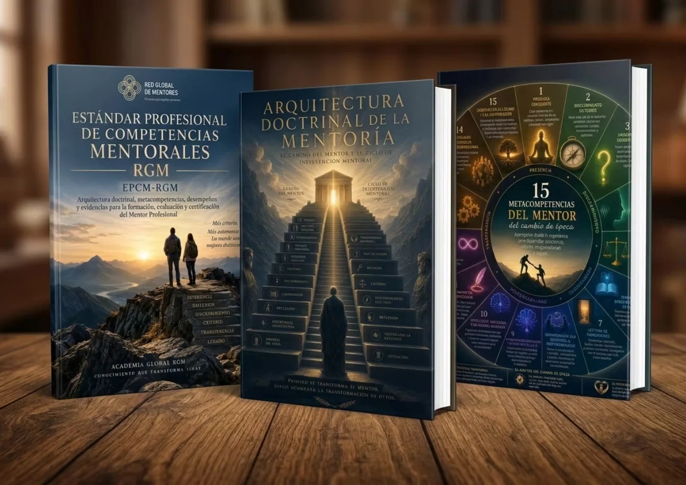

Guia Integral de Disciplinas
O mapa do ecossistema. Clarifica as diferenças e complementaridades entre a mentoria, o coaching, a terapia e outras práticas. Define limites, evita confusões e eleva o quadro ético do acompanhamento.
Uma tríade especial para profissionais de outras disciplinas.
Uma formação intensiva concebida para profissionais de disciplinas afins que procuram integrar a mentoria com excelência e padrão internacional.
O mapa do ecossistema. Clarifica as diferenças e complementaridades entre a mentoria, o coaching, a terapia e outras práticas. Define limites, evita confusões e eleva o quadro ético do acompanhamento.
A porta de entrada rápida. Expõe de forma direta e prática os conceitos centrais, as competências e os pilares exclusivos da mentoria, permitindo uma adoção e integração imediatas na prática profissional.
A estruturação da prática. Transforma o acompanhamento empírico numa disciplina formal, ética e certificável, através de processos claros, transferência de critério e supervisão profissional.

Um manual especial para universidades.
O Guia Mestre da Mentoria, editado pela Academia RGM, é a obra de referência internacional para compreender e exercer a mentoria com rigor, ética e padrão profissional. Integra os fundamentos da disciplina com ferramentas aplicadas, modelos metodológicos e quadros concetuais que ordenam e consolidam a prática mentoral.
Estrutura académica. A obra é composta por 3 tomos (Nível 01, Nível 02 e Nível 03), concebidos para acompanhar o desenvolvimento do Programa Académico para Universidades da Academia RGM nos seus diferentes níveis de formação e certificação.

Um percurso pela história, pelo presente e pela prática profissional.
Esta tríade de Guias da Mentoria constitui um corpo bibliográfico coerente e fundacional, concebido para compreender a mentoria na sua verdadeira natureza, sem a confundir nem a diluir entre outras disciplinas do acompanhamento humano.
Ao longo dos seus três tomos, a obra prepara a pessoa para compreender o que é a mentoria antes de tentar exercê-la, situando-a não como uma técnica profissional, mas como uma experiência humana consciente, anterior a qualquer papel, certificação ou método.
É o suporte bibliográfico central do Programa Intermédio da Mentoria, e foi concebida como uma arquitetura concetual sólida, transversal e escalável, capaz de dar fundamento a futuras formações, especializações e novas tríades temáticas.

Guias para a ação da mentoria: a tríade funcional da mentoria consciente.
Esta tríade foi concebida para mentores em exercício que procuram evoluir continuamente a sua prática. No acompanhamento humano, as boas intenções e a acumulação de ferramentas são insuficientes; o que distingue um verdadeiro profissional é o critério para determinar quando, como e a partir de que papel intervir.
A série Mentoría en Acción nasce para responder a esta exigência. Mais do que uma coleção de técnicas ou um manual de fórmulas, constitui uma arquitetura formativa orientada para a maturação real do mentor: um percurso integral que articula critério, ação e reflexão, as três dimensões inseparáveis da prática consciente.
É a leitura prévia fundamental antes de aprofundar os Manuais de Nicho: estabelece as bases metodológicas que todo o mentor especialista deve dominar para exercer com padrão e excelência.

Os três últimos títulos editados pela Academia Global e pela Editorial RGM.
Esta tríade constitui a leitura prévia fundamental antes de aprofundar os Manuais de Nicho. Os seus conteúdos estabelecem as bases metodológicas que todo o mentor especialista deve dominar para exercer com padrão e excelência.

A nossa coleção de Manuais Funcionais reúne guias estratégicos com modelos, ferramentas e práticas profissionais concebidos para diferentes nichos de mercado. Estes guias dão ao mentor todos os critérios necessários para exercer a sua prática profissional com os mais elevados padrões.
Teremos 12 manuais de especialização. Já estão editados os quatro que se veem abaixo, e virão muitos mais.
Aceda a grande parte dos Manuais Funcionais gratuitamente ao adquirir esta adesão.